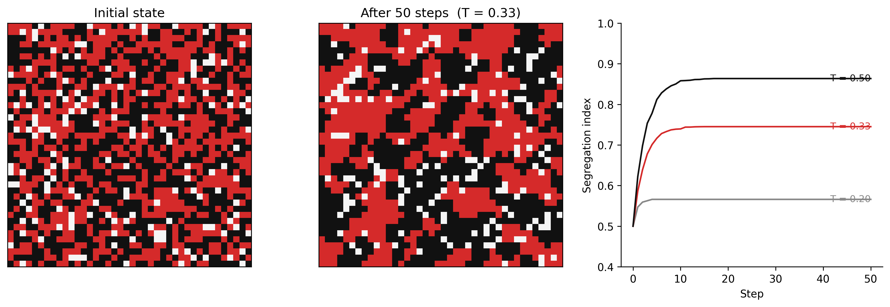

Nonlinearity, tipping points, and why systems surprise us
4.1 The puzzle
Schelling (1971) showed that residential racial segregation can emerge from mild preferences. If each individual simply prefers that at least one-third of their neighbours share their background — a preference that, stated plainly, sounds innocuous — the aggregate outcome, played out over thousands of individual moves, produces near-total neighbourhood segregation.
No individual intended this. No force compelled it. The pattern emerged from the local rules.
This is emergence: system-level behaviour that is not present in any of the components, and is not predictable from any single feedback loop. It arises from the interaction of many parts, operating according to local rules, in a system with nonlinear dynamics and feedback.
Understanding emergence is the most important and most difficult part of systems thinking.
4.2 Nonlinearity
Linear systems are predictable. Double the input, double the output. The response is proportional to the cause. Linear systems are mathematically tractable and pedagogically convenient. They are also rare in nature and absent in human systems.
Most real systems are nonlinear. The response to input depends on the current state of the system. Causes do not scale proportionally to effects. Small changes can produce large consequences; large changes can produce no discernible effect.
Examples of nonlinearity in spatial systems:
Wildfire: At low fuel moisture, a small ignition source produces a small fire. At a threshold moisture level, the same ignition source produces a fire that spreads to the entire landscape. The transition is not gradual. The system is near a tipping point.
Urban congestion: Traffic flow increases roughly linearly with vehicle count — until the road reaches capacity. Near capacity, small increases in traffic cause disproportionate slowdowns. At capacity, the system can collapse into gridlock from a very small additional perturbation.
Aquifer depletion: Groundwater extraction at moderate rates causes gradual water table decline. Near a critical depth, pumping costs become prohibitive, surface subsidence accelerates, and recharge rates drop. The transition from functioning to failed aquifer can be rapid.
In each case, the nonlinearity is structural. It arises from a threshold, a capacity limit, or a change in the dominant feedback structure — not from any unusual event.
4.3 Tipping points
A tipping point is a threshold in a system’s state beyond which the dominant feedback structure changes — and the change is self-sustaining or irreversible.
Before the threshold: balancing feedbacks dominate. The system is resilient — it can absorb perturbations and return to its current state.
Near the threshold: the balancing feedbacks weaken. The system’s resilience decreases. Small perturbations produce larger responses.
Past the threshold: a reinforcing feedback takes over. The system moves rapidly toward a new equilibrium, often very different from the original.
The key characteristic: the system does not warn you that a tipping point is approaching by behaving differently in an obvious way. It may look stable right up until the moment it tips. What is changing is not the behaviour but the resilience — the capacity to return to the original state after a perturbation. Measuring resilience requires a different kind of observation than measuring current state.
Two feedback loops share a stock — one balancing, one reinforcing — and external stress determines which loop dominates, producing two stable regimes separated by an unstable threshold.
graph LR
SS["System State"] -->|"+"| BF["Balancing\nFeedback\nStrength"]
BF -->|"− [B]"| SS
EX["External\nStress"] -->|"−"| BF
EX -->|"+"| RF["Reinforcing\nFeedback\nStrength"]
RF -->|"+ [R]"| SS
style SS fill:#f5f5f5,stroke:#111111,stroke-width:2px
style BF fill:#f5f5f5,stroke:#111111,stroke-width:2px
style RF fill:#f5f5f5,stroke:#111111,stroke-width:2px
style EX fill:#fff3f3,stroke:#d52a2a,stroke-width:2px
Figure 3.1. Generic tipping point structure. Two feedback loops operate on the same stock (System State): a balancing loop (B) that stabilises the current state, and a reinforcing loop (R) that amplifies departures from it. External stress weakens the balancing feedback and strengthens the reinforcing one. Before the threshold, B dominates; past it, R dominates. The transition is a switch in which loop governs behaviour, not a gradual change.
Phase portraits and bifurcation theory
The tipping point structure above has a precise mathematical representation. When a system’s equilibrium structure changes qualitatively as a parameter varies — when a stable equilibrium disappears, or a new one appears — this is called a bifurcation. The coral reef shift is a fold (saddle-node) bifurcation: the healthy-reef equilibrium disappears as thermal stress passes a critical value, and the system falls to the only remaining equilibrium.
Phase portraits — diagrams that show the system’s trajectory in state space rather than over time — make the two-equilibrium structure visible directly. WH Maths Vol 8 (Dynamical Systems and Stability) develops phase portraits, fixed points, and bifurcation diagrams from first principles.
4.3.1 Coral reef regime shift (Earth systems)
Two competing reinforcing loops operate on the Coral Cover stock: one sustains the healthy high-coral state, the other sustains the degraded algae-dominated state, and which loop runs depends on which side of the threshold the system sits.
graph LR
CC["Coral Cover"] -->|"+"| GR["Grazing Rate"]
GR -->|"−"| AC["Algae Cover"]
AC -->|"− [R1]"| CC
AC -->|"+"| BS["Bleaching /\nSmothering"]
BS -->|"− [R2]"| CC
WS["Warming /\nNutrient Stress"] -->|"+"| BS
style CC fill:#fff3f3,stroke:#d52a2a,stroke-width:2px
style GR fill:#f5f5f5,stroke:#111111,stroke-width:2px
style AC fill:#f5f5f5,stroke:#111111,stroke-width:2px
style BS fill:#f5f5f5,stroke:#111111,stroke-width:2px
style WS fill:#f5f5f5,stroke:#111111,stroke-width:2px
Figure 3.2. Coral reef regime shift: two competing reinforcing loops sharing the Coral Cover stock. Loop R1 (upper path): high coral cover supports grazing that suppresses algae, protecting coral — a self-sustaining healthy state. Loop R2 (lower path): algae proliferation causes bleaching and smothering that reduces coral cover, which reduces competition against algae — a self-sustaining degraded state. Warming and nutrient stress (left) tips the system from R1 dominance into R2 dominance. The reef does not oscillate between these states — it shifts.
A healthy coral reef is maintained by a balancing loop: coral growth → structural complexity → habitat for fish → grazing of algae → cleared substrate for coral recruitment → coral growth. Algae is kept in check by grazing.
Warming and nutrient loading stress coral and reduce grazer populations. As stress accumulates, the balancing loop weakens. The reef approaches a tipping point.
Past the threshold, the reinforcing loop takes over: bleached coral → reduced structural complexity → reduced fish habitat → reduced grazing → algae proliferation → smothered coral recruitment → further bleaching. The reef shifts from coral-dominated to algae-dominated. The new state is self-sustaining. Recovery requires removing the stresses and re-establishing the original balancing loop — which may take decades even if conditions improve.
4.3.2 Neighbourhood segregation (Human systems)
The feedback between neighbourhood composition and individual satisfaction forms the loop below: as local composition shifts, satisfaction changes, which drives further moves, which shifts composition further.
graph LR
SEG["Segregation\n(Fraction\nSame-Type)"] -->|"+"| SAT["Individual\nSatisfaction"]
SAT -->|"−"| MV["Move Rate"]
MV -->|"+ [B]"| SEG
style SEG fill:#fff3f3,stroke:#d52a2a,stroke-width:2px
style SAT fill:#f5f5f5,stroke:#111111,stroke-width:2px
style MV fill:#f5f5f5,stroke:#111111,stroke-width:2px
Figure 3.3. Schelling move-decision feedback loop. High local segregation raises individual satisfaction (+), which reduces the rate of moves away from the neighbourhood (−), which maintains or increases local same-type fractions (+). The loop is balancing — it drives the system toward a stable equilibrium. That equilibrium is near-total segregation: not because anyone chose it, but because mild individual preferences are sufficient to tip the system to the segregated stable state.
Schelling (1971) demonstrates that mild individual preferences can produce macro-level segregation through the dynamics of the housing market. The mechanism: an individual who feels dissatisfied with their neighbourhood’s composition moves. Their move changes the composition of both the origin and destination neighbourhoods. Others’ satisfaction levels change in response. More moves follow.
The emergent outcome — near-total segregation — is a stable equilibrium. It is not the equilibrium that anyone chose or wanted. It emerged from the feedback between individual decisions and neighbourhood composition.
Integration is the other stable equilibrium of the same model — but it requires that the initial conditions place the system on the right side of the tipping point. Policies that try to move a segregated system toward integration are pushing against a self-reinforcing structure.
Measuring segregation spatially
The Schelling model produces a spatial pattern — clusters of same-type agents — that can be measured and compared across cities and time. Spatial statistics offers several segregation indices (the dissimilarity index, Moran’s I, the exposure index) that quantify different aspects of the pattern the model generates.
WH Computational Geography Part 5 (Economic Systems) applies these measures to real urban data. The systems thinking question is why the pattern emerges; the spatial statistics question is how to measure it. Both are necessary — measurement without mechanism cannot distinguish a segregation pattern that is self-reinforcing from one with an external cause.
4.3.3 Distribution shift in ML (Data systems)
A model is trained on a historical dataset. Its performance on new data is monitored. For months, performance is stable. Then, abruptly, error rates spike.
What happened? The world changed — but not suddenly. The concept the model was trained on shifted gradually: language changed, consumer preferences shifted, land use changed. The model’s training data became increasingly unrepresentative of current conditions. The system was moving toward a threshold — a point at which the gap between training distribution and current distribution became large enough that predictions failed.
The model gave no warning. It continued performing well on the test set (drawn from the same historical distribution). The tipping point was invisible until crossed.
This is why distribution shift monitoring matters: not because errors happen suddenly, but because the system is often near a threshold that gives no external signal of its proximity.
Detecting drift before the tipping point
The diagnosis here — that the system was moving toward a threshold that gave no external signal of its proximity — implies a specific engineering requirement: monitor the distance to the threshold, not just the current state. For ML systems, this means monitoring the divergence between training and serving distributions (KL divergence, population stability index), not just downstream accuracy.
WH Data Engineering Ch 7–8 covers drift detection methods, monitoring pipeline design, and the governance structures that keep the retraining feedback loop operational. The systems thinking framework is the diagnosis; Data Engineering Ch 7–8 is the engineering response.
4.4 Emergence
Emergence is the appearance of system-level properties that are not present in any component and cannot be predicted by examining components in isolation.
Emergence arises from:
Nonlinear interactions — components affect each other in ways that are state-dependent
Feedback — outputs become inputs; the system’s history shapes its current state
Multiple scales — local rules produce global patterns that in turn shape local conditions
Heterogeneity — components differ; the system’s behaviour depends on who interacts with whom
Examples of emergence:
Traffic jams form from vehicles following simple rules (maintain spacing, avoid collision). No vehicle intends to create a jam. The jam moves backward at roughly 15 km/h regardless of which vehicles compose it — a phantom object with no material continuity.
City structure — the distinctive rings of land use (industrial, commercial, residential, suburban) that appear in cities worldwide — emerges from individual actors maximising their spatial utility under a shared set of economic constraints. No planner designed it.
Epidemic waves — the characteristic rise and fall of infection curves — emerge from individual transmission events. The wave is a population-level phenomenon; no individual carries it.
Overfitting in ML — a model that perfectly fits training data has “memorised” statistical noise as if it were signal. This is not a choice the model makes; it is an emergent property of optimisation in a high-dimensional space with insufficient data.
A jumbo jet is complicated. It has hundreds of thousands of components in precisely engineered relationships. Its behaviour is derivable from its design. A city, an ecosystem, a training pipeline is complex: components interact adaptively, system state is history-dependent, and behaviour cannot be derived by inspecting any component in isolation. Complicated systems can be understood by decomposition. Complex systems cannot.
Emergence is what complex systems produce: system-level properties absent from any component. Emergence is the phenomenon; complexity is the structural condition that generates it.
The engineering implication is direct. Optimising components does not prevent emergent failures. Failures in complex systems are typically failures of the interaction structure — the feedback loops, delays, and adaptive responses between components — not failures of the components themselves.
4.5 Resilience, resistance, and brittleness
A resilient system can absorb perturbations and return to its current state. A resistant system repels perturbations and barely changes. A brittle system breaks under stress.
These are different properties. A coral reef near a tipping point may appear resistant — it looks healthy, fish are present, coral is growing. But its resilience is low: the balancing feedbacks that would restore it after a perturbation have been weakened. One bleaching event pushes it past the threshold.
Systems can be both high-resistance and low-resilience. This is dangerous. The external appearance of stability masks internal fragility. The system has used its resilience to absorb previous stresses — and has less capacity to absorb the next one.
A deployed ML system can appear resistant while its resilience erodes. Accuracy on a fixed test set stays flat — the system looks stable. But resilience here means the capacity of the monitoring-and-retraining feedback loop to restore performance after a perturbation: a distribution shift, an upstream schema change, a data quality degradation. A system with an active retraining cadence, fresh data pipelines, and broad monitoring coverage has high resilience. A system whose monitoring scope has been cut, whose retraining schedule has stretched, or whose feedback loop has been severed by a data governance boundary appears stable until a threshold is crossed — then error rate spikes without warning. The external stability masked internal fragility: the corrective loop was present in principle but not operating in practice. Exercise 3.4 asks you to map this structure as a causal loop diagram and identify where the feedback starvation occurs.
4.6 Simulating segregation: from mild preferences to macro-level patterns
Exercise 3.2 asks you to implement the Schelling model; the code below is one version. Run it before reading the interpretation. The three threshold scenarios use the same grid size and differ only in T — and that difference alone is enough to produce macro-level outcomes prose cannot adequately carry.
Code
"""Schelling segregation — Chapter 3. Grid: GRID_SIZE × GRID_SIZE. Two agent types. Agents move if fraction same-type neighbours < THRESHOLD."""import numpy as npimport matplotlib.pyplot as pltfrom matplotlib.colors import ListedColormap# Named constantsGRID_SIZE =40DENSITY_A =0.45DENSITY_B =0.45N_STEPS =50SEED =42# Threshold values to compare; T=0.33 is used for the spatial panelsTHRESHOLDS = [0.20, 0.33, 0.50]T_SPATIAL =0.33# -- Initialise grid ----------------------------------------------------------np.random.seed(SEED)n_cells = GRID_SIZE * GRID_SIZEn_a =int(n_cells * DENSITY_A)n_b =int(n_cells * DENSITY_B)flat = np.zeros(n_cells, dtype=np.int8)flat[:n_a] =1# Type Aflat[n_a:n_a + n_b] =2# Type Bnp.random.shuffle(flat)base_grid = flat.reshape(GRID_SIZE, GRID_SIZE)# -- Moore neighbourhood helpers ----------------------------------------------def neighbour_counts(grid):"""Return (same-type count, occupied count) arrays for every cell."""from numpy.lib.stride_tricks import sliding_window_view padded = np.pad(grid, 1, mode="wrap") windows = sliding_window_view(padded, (3, 3)) # shape (R, C, 3, 3) same = np.zeros_like(grid, dtype=np.int8) occ = np.zeros_like(grid, dtype=np.int8)for dr inrange(3):for dc inrange(3):if dr ==1and dc ==1:continue# skip centre cell nb = windows[:, :, dr, dc] occ += (nb >0).astype(np.int8) same += (nb == grid).astype(np.int8) * (grid >0).astype(np.int8)return same, occ# -- Segregation index --------------------------------------------------------def segregation_index(grid):"""Average fraction of same-type occupied neighbours across all agents.""" same, occ = neighbour_counts(grid) occupied = grid >0 fracs = np.where((occupied) & (occ >0), same / occ, np.nan)returnfloat(np.nanmean(fracs))# -- Single step: move unsatisfied agents to random empty cells ---------------def step(grid, threshold): same, occ = neighbour_counts(grid) occupied = grid >0 satisfied = np.where(occupied & (occ >0), same / occ >= threshold, True) unsatisfied_idx =list(zip(*np.where(~satisfied & occupied))) empty_idx =list(zip(*np.where(grid ==0))) np.random.shuffle(unsatisfied_idx)for pos in unsatisfied_idx:ifnot empty_idx:break dest = empty_idx.pop(np.random.randint(len(empty_idx))) grid[dest], grid[pos] = grid[pos], 0 empty_idx.append(pos)return grid# -- Run simulation for each threshold ----------------------------------------series = {}grid_init =Nonegrid_final =Nonefor T in THRESHOLDS: g = base_grid.copy() s = [segregation_index(g)] # record initial stateif T == T_SPATIAL: grid_init = g.copy() # save initial grid for panel 1for _ inrange(N_STEPS): g = step(g, T) s.append(segregation_index(g)) series[T] = sif T == T_SPATIAL: grid_final = g.copy() # save final grid for panel 2# -- Figure: 3 panels ---------------------------------------------------------cmap = ListedColormap(["#f5f5f5", "#d52a2a", "#111111"])fig, axes = plt.subplots(1, 3, figsize=(12, 4), dpi=150)# Panel 1: initial gridaxes[0].imshow(grid_init, cmap=cmap, vmin=0, vmax=2, interpolation="nearest")axes[0].set_title("Initial state")axes[0].set_xticks([])axes[0].set_yticks([])# Panel 2: final grid after T=0.33axes[1].imshow(grid_final, cmap=cmap, vmin=0, vmax=2, interpolation="nearest")axes[1].set_title("After 50 steps (T = 0.33)")axes[1].set_xticks([])axes[1].set_yticks([])# Panel 3: segregation index time seriesax = axes[2]palette = {0.20: "#888888", 0.33: "#d52a2a", 0.50: "#111111"}labels = {0.20: "T = 0.20", 0.33: "T = 0.33", 0.50: "T = 0.50"}steps_x =list(range(N_STEPS +1))for T in THRESHOLDS: ax.plot(steps_x, series[T], color=palette[T], linewidth=1.5) ax.annotate( labels[T], xy=(N_STEPS, series[T][-1]), fontsize=9, color=palette[T], ha="right", va="center", )ax.set_xlabel("Step")ax.set_ylabel("Segregation index")ax.set_ylim(0.4, 1.0)ax.spines["top"].set_visible(False)ax.spines["right"].set_visible(False)ax.grid(False)plt.tight_layout()plt.savefig("_assets/ch03-schelling-simulation.png", dpi=150, bbox_inches="tight")plt.show()

Figure 4.1: Figure 3.4. Schelling segregation model. Left: initial random placement of Type A (red), Type B (black), and empty (grey) cells. Centre: state after 50 steps with satisfaction threshold T = 0.33 — near-complete segregation has emerged. Right: segregation index over time for three thresholds. Even at T = 0.20 macro-level segregation emerges within 30 steps. The tipping point is in the interaction structure, not in the individual preferences.
What to try
Lower the threshold to T = 0.10 (agents satisfied as long as even one neighbour shares their type). Does segregation still emerge? What does this tell you about the minimum preference that produces macro-level separation?
Increase the grid to 60 × 60 and run for 100 steps. Does the final segregation index change? What does this tell you about scale?
Set DENSITY_A = 0.30 and DENSITY_B = 0.60 (asymmetric populations). What happens to the spatial structure of the final state? Is the minority group more or less segregated than in the symmetric case?
4.7 Exercises
3.1 — Identifying nonlinearity
For each of the following, identify the threshold mechanism and describe what happens to the dominant feedback structure on either side of the threshold:
A fishery stock and the rate of population recovery
Social media platform growth and user network effects
A wildfire and fuel moisture
An epidemic and the herd immunity threshold
3.2 — Schelling’s model
Implement a simple version of Schelling’s segregation model in Python or in an agent-based modelling tool. Use a grid of cells, two types of agents, and a satisfaction threshold. Vary the threshold from 10% to 60% same-type neighbours. At what threshold does macro-level segregation emerge? What does this tell you about the relationship between individual preferences and collective outcomes?
3.3 — Early warning signals
Tipping points can sometimes be detected before they occur through critical slowing down: a system near a tipping point returns to equilibrium more slowly after a perturbation, and its variance increases (Scheffer et al. 2009). Research one method for detecting critical slowing down in a time series. Apply it (conceptually or in code) to a time series of your choice (suggested: Atlantic Meridional Overturning Circulation strength, or any ecological time series with a documented regime shift).
3.4 — Resilience audit
Choose a system you work with or depend on (a data pipeline, a transit network, a supply chain, a water system). Conduct a simple resilience audit:
What is the system’s current state?
What are the balancing feedbacks that restore it after perturbation?
What stresses might weaken those balancing feedbacks?
Are there indicators you could monitor that would signal decreasing resilience?
Status: draft — all structural elements complete: tipping points (three domain examples, three Mermaid diagrams), emergence vs. complexity distinction, resilience (including data/AI example), Schelling segregation simulation, three cross-link callouts.
Scheffer, Marten, Jordi Bascompte, William A. Brock, et al. 2009. “Early-Warning Signals for Critical Transitions.”Nature 461 (7260): 53–59. https://doi.org/10.1038/nature08227.